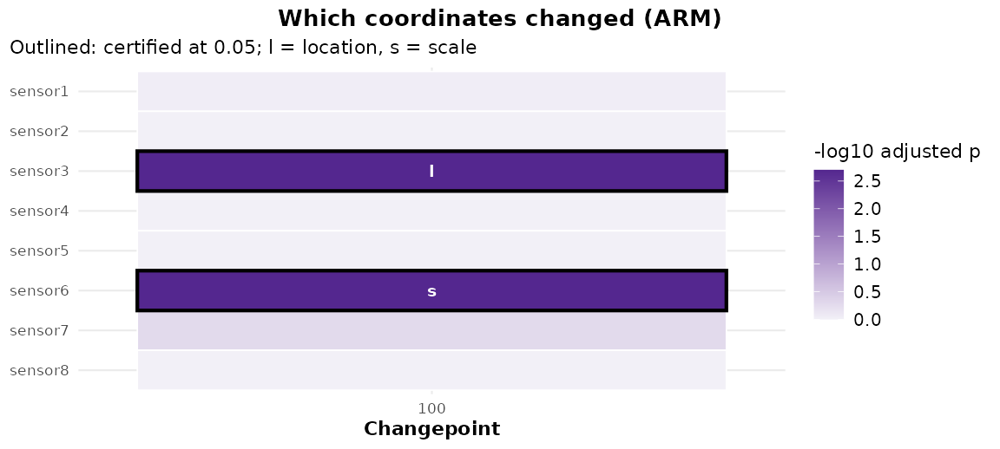
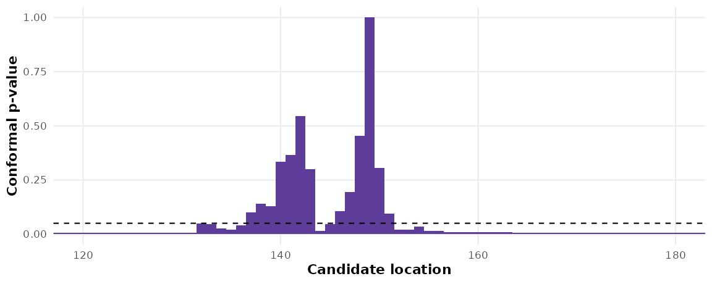
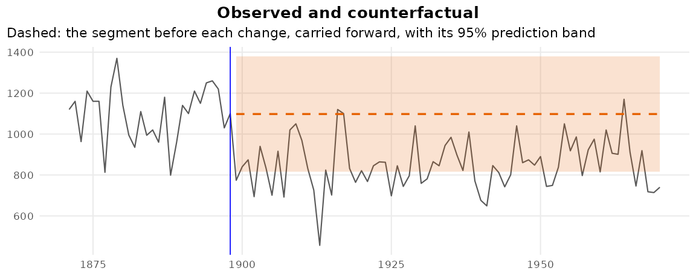
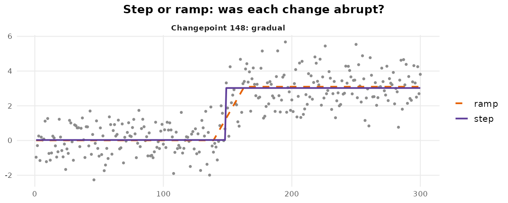
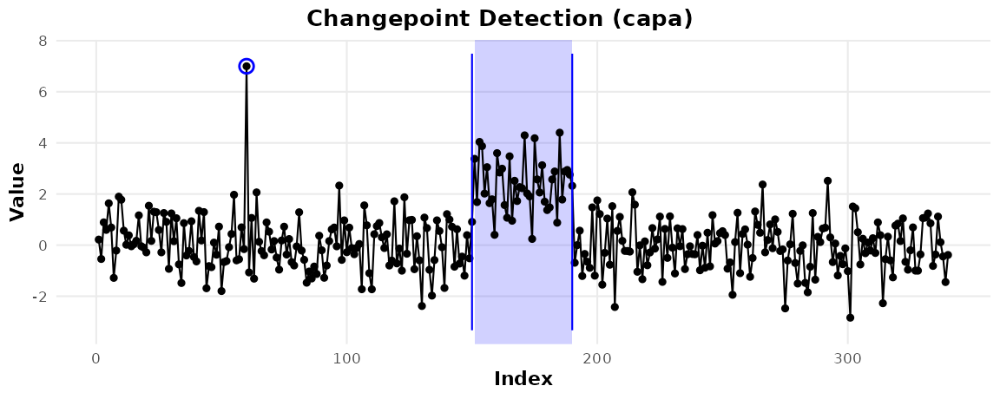
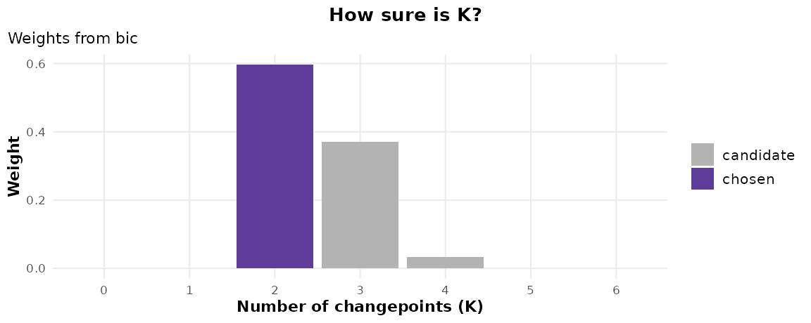
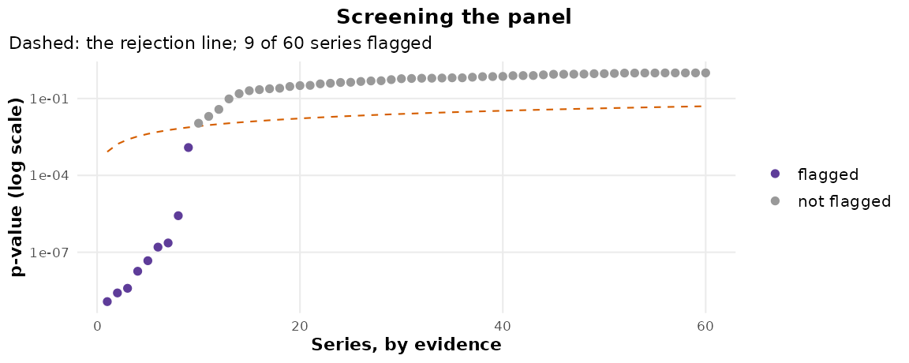

Beyond the Location: Which, How Sure, and What If
Youzhi
Yu
University of Chicago
Source: vignettes/articles/beyond-detection.Rmd
beyond-detection.RmdA detector answers where. Every applied field then asks the same few questions: which of the measured quantities changed, how sure the location is, what the series would have done otherwise, whether the change was a jump at all, and, with many series, which ones changed. This page answers each with one function, on data where the answer is known.
Which coordinates changed
Testing each sensor at the detected changepoint is the obvious answer
and an invalid one: the location was chosen where the evidence across
all of them peaks, so an unchanged sensor is tested at the split most
favourable to it. cpt_attribute() scores each coordinate by
the maximum of a rank statistic over every split instead (ARM, Peng et
al. 2026), so the certificate cannot depend on how the location was
found.
set.seed(1)
n <- 200
X <- matrix(rnorm(n * 8), n, 8, dimnames = list(NULL, paste0("sensor", 1:8)))
X[101:n, 3] <- X[101:n, 3] + 1.2 # a shift in sensor3
X[101:n, 6] <- X[101:n, 6] * 2.5 # a scale change in sensor6
fit_mv <- cpt_detect(X, method = "ecp")
att <- cpt_attribute(fit_mv, B = 499, seed = 1)
att
#> ggcpt_attribution (ARM: attribution by rank maxima)
#> Controls: family-wise error (Westfall-Young) at 0.05
#> Permutations: 499
#> Changepoint 100: 2 of 8: sensor3 (location), sensor6 (scale)
#>
#> # A tibble: 8 × 13
#> cp coordinate statistic statistic_location statistic_scale p_value
#> <int> <chr> <dbl> <dbl> <dbl> <dbl>
#> 1 100 sensor1 2.57 2.15 2.57 0.316
#> 2 100 sensor2 1.59 1.59 0.996 0.952
#> 3 100 sensor3 7.10 7.10 1.25 0.002
#> 4 100 sensor4 1.76 1.76 1.18 0.878
#> 5 100 sensor5 2.16 1.38 2.16 0.564
#> 6 100 sensor6 6.48 2.51 6.48 0.002
#> 7 100 sensor7 3.06 3.06 2.70 0.1
#> 8 100 sensor8 2.06 2.06 1.88 0.704
#> # ℹ 7 more variables: p_adjusted <dbl>, changed <lgl>, type <chr>,
#> # window_start <int>, window_end <int>, n_window <int>, source <chr>
autoplot(att)
The two changed sensors are certified, each with its type, and the six that did not change are left alone. Measured on the calibration design, the family-wise error over the unchanged coordinates is:
How sure is the location, with no model
cpt_confint(method = "conformal") returns a set of
locations that holds the true one with probability at least the level,
for any distribution of the noise, provided the observations within each
segment are exchangeable (Hore and Ramdas 2026). Here on heavy-tailed
noise, where a Gaussian interval has no footing:
set.seed(2)
y <- c(rt(150, df = 3), rt(150, df = 3) + 1.5)
fit <- cpt_detect(y, method = "pelt")
ci <- cpt_confint(fit, method = "conformal", B = 199, seed = 1)
ci
#> # A tibble: 1 × 6
#> cp ci_lower ci_upper level source set_size
#> <int> <int> <int> <dbl> <chr> <int>
#> 1 149 137 151 0.95 conformal 13
prof <- attr(ci, "profile")
ggplot(prof, aes(position, p_value)) +
geom_col(width = 1, fill = "#5e3c99") +
geom_hline(yintercept = 0.05, linetype = "dashed") +
coord_cartesian(xlim = c(120, 180)) +
labs(x = "Candidate location", y = "Conformal p-value")
The coverage, measured on the calibration design and against the bootstrap:
cal[grepl("location", cal$guarantee) & grepl("conformal|bootstrap", cal$call),
c("call", "nominal", "realised", "mcse")]
#> # A tibble: 2 × 4
#> call nominal realised mcse
#> <chr> <dbl> <dbl> <dbl>
#> 1 "cpt_confint(cpt_detect(x), method = \"bootstrap\")" 0.95 0.968 0.0056
#> 2 "cpt_confint(cpt_detect(x), method = \"conformal\")" 0.95 0.97 0.0054cpt_confint_coverage() runs the same study for your own
length, jump and noise.
What would have happened
cpt_counterfactual() carries the segment before each
change forward with its own model, with a prediction band, and the gap
is the effect in the data’s units: the figure interrupted-time-series
studies report.
nile <- cpt_detect(Nile, method = "amoc", change_in = "meanvar")
cf <- cpt_counterfactual(nile)
glance(cf)
#> # A tibble: 1 × 5
#> cp n mean_effect cumulative_effect share_outside
#> <int> <int> <dbl> <dbl> <dbl>
#> 1 28 72 -248. -17840. 0.389
autoplot(cf)
Was it a jump?
Every engine looks for a jump, and given a transition that took
thirty observations it reports one confidently placed changepoint in the
middle. cpt_abruptness() fits a step and a ramp at each
changepoint and reports the transition width with an interval:
sim <- cpt_simulate(300, changepoints = 150, params = c(0, 3),
transition = 40, seed = 3)
ab <- cpt_abruptness(cpt_detect(sim$value, method = "pelt"))
ab
#> ggcpt_abruptness (a step against a ramp at each changepoint)
#> Changepoint 148: gradual, transition width 24 (8 to 31)
#>
#> # A tibble: 1 × 10
#> cp window_start window_end width width_lower width_upper centre statistic
#> <int> <int> <int> <dbl> <dbl> <dbl> <dbl> <dbl>
#> 1 148 1 300 24 8 31 150. 5.62
#> # ℹ 2 more variables: p_value <dbl>, verdict <chr>
autoplot(ab)
A change that comes back
An outbreak that subsides or a fault that is repaired is a stretch away from a baseline, not a new regime. CAPA models exactly that, and reports the stretches and the single outliers:
set.seed(4)
z <- c(rnorm(150), rnorm(40, 2.5), rnorm(150))
z[60] <- 7
ep <- cpt_detect(z, method = "capa")
cpt_regions(ep)
#> # A tibble: 2 × 7
#> start end length type coordinates mean_change strength
#> <int> <int> <int> <chr> <chr> <dbl> <dbl>
#> 1 60 60 1 point V1 NA 5.93
#> 2 151 190 40 collective V1 3.75 NA
autoplot(ep)
How many changes, and which series
cpt_k_weights() turns the criterion curve of
cpt_select() into weights over the number of changes, and
averages the candidate segmentations into a probability at each
location:
set.seed(5)
w <- cpt_k_weights(cpt_select(c(rnorm(100), rnorm(100, 0.8), rnorm(100)),
criterion = "bic", k_max = 6))
w
#> ggcpt_k_weights (weights over the number of changepoints, from bic)
#> Chosen: K = 2, weight 0.596
#> Largest weights: K = 2: 0.596; K = 3: 0.370; K = 4: 0.032
#> 95% of the weight: K in {2, 3}
#>
#> # A tibble: 7 × 5
#> k value delta weight chosen
#> <int> <dbl> <dbl> <dbl> <lgl>
#> 1 0 35.1 23.0 0.00000605 FALSE
#> 2 1 30.7 18.6 0.0000539 FALSE
#> 3 2 12.1 0 0.596 TRUE
#> 4 3 13.1 0.952 0.370 FALSE
#> 5 4 17.9 5.82 0.0325 FALSE
#> 6 5 25.4 13.3 0.000777 FALSE
#> 7 6 33.7 21.6 0.0000124 FALSE
autoplot(w)
And for a panel, cpt_screen() tests every series for a
change anywhere and controls the false discovery rate across them:
set.seed(6)
panel <- c(lapply(1:52, function(i) rnorm(120)),
lapply(1:8, function(i) c(rnorm(60), rnorm(60, 1.2))))
names(panel) <- paste0("store", 1:60)
sc <- cpt_screen(panel)
glance(sc)
#> # A tibble: 1 × 5
#> n_series n_flagged alpha control test
#> <int> <int> <dbl> <chr> <chr>
#> 1 60 9 0.05 fdr pettitt
autoplot(sc)
References
Fisch, A. T. M., Eckley, I. A. and Fearnhead, P. (2022). A linear time method for the detection of collective and point anomalies. Statistical Analysis and Data Mining, 15(4), 494-508.
Hore, R. and Ramdas, A. (2026). Conformal changepoint localization. arXiv:2602.06267.
Peng, C., Wu, M., Yan, Q., Chen, D. and Shen, Z. (2026). ARM: Detector-agnostic changepoint attribution with finite-sample error control. arXiv:2608.01691.